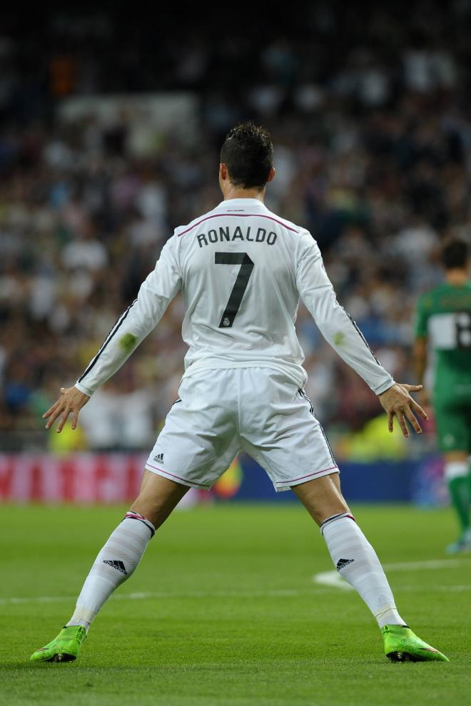
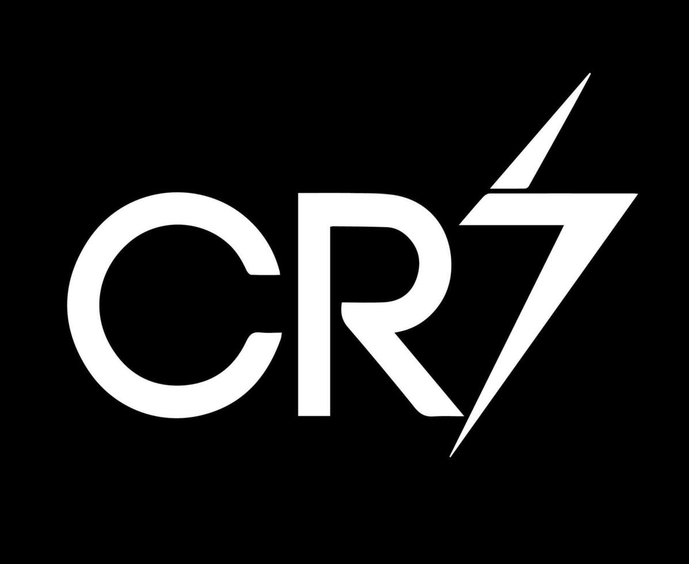
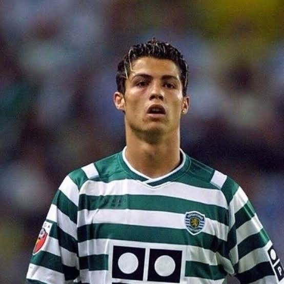
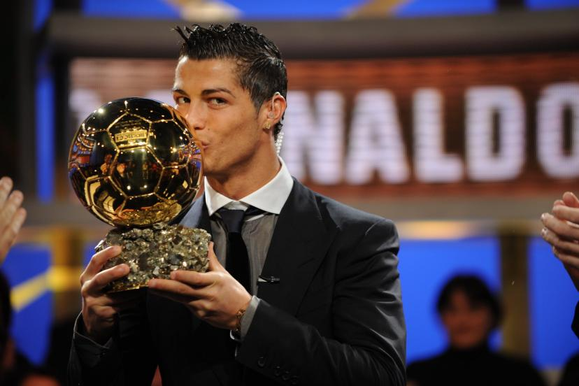
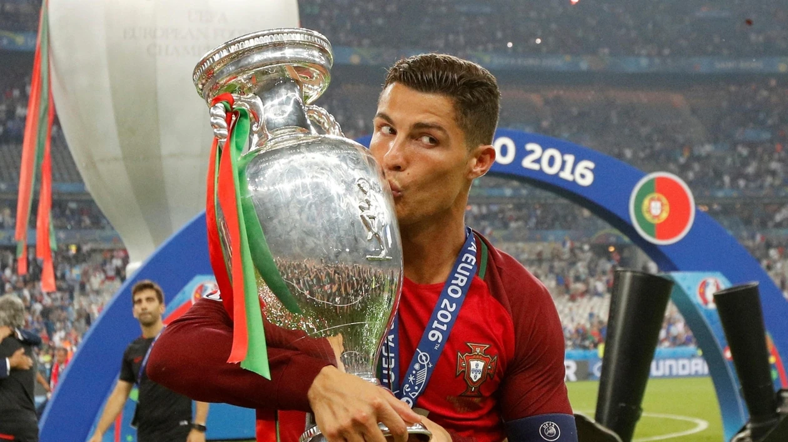

Carrière
Revivez son parcours club par club.
Découvrir la carrière
CR7 - La Légende
De Madère au Sporting Lisbonne, le rêve commence.

Le premier Ballon d'Or en 2008.
Neuf saisons, 450 buts, meilleur buteur de l'histoire du club.

Champion d'Europe 2016, le rêve d'une nation.
Né le à Funchal, sur l'île de Madère, Cristiano Ronaldo est considéré comme l'un des plus grands footballeurs de l'histoire. Par son travail acharné et sa détermination, il a battu de nombreux records et remporté les plus grands trophées.
| Club | Années | Matchs | Buts |
|---|---|---|---|
| Sporting Portugal | 2002-2003 | 31 | 5 |
| Manchester United | 2003-2009 | 292 | 118 |
| Real Madrid | 2009-2018 | 438 | 450 |
| Juventus FC | 2018-2021 | 134 | 101 |
| Manchester United | 2021-2022 | 54 | 27 |
| Al-Nassr FC | Depuis 2023 | 160 | 138 |
| Total | Depuis 2002 | 1109 | 839 |

Revivez son parcours club par club.
Découvrir la carrière
Tous ses trophées et records.
Voir le palmarèsLe projet et le formulaire de contact.
Me contacter